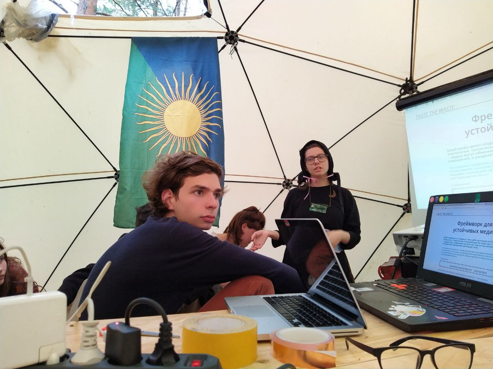
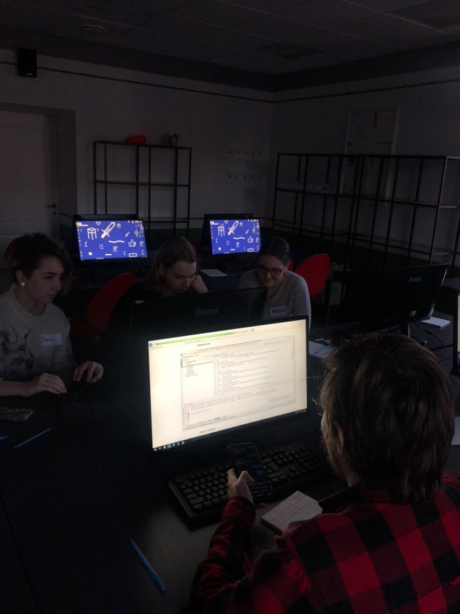
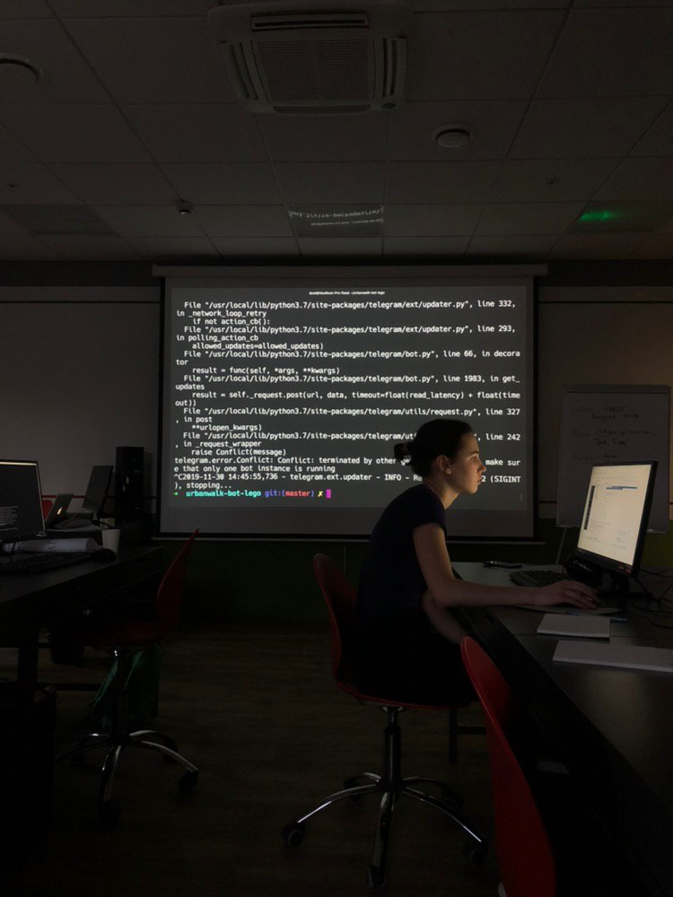
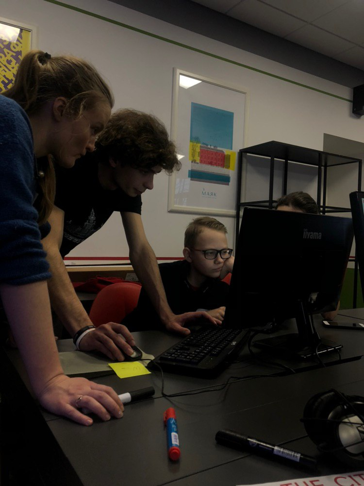
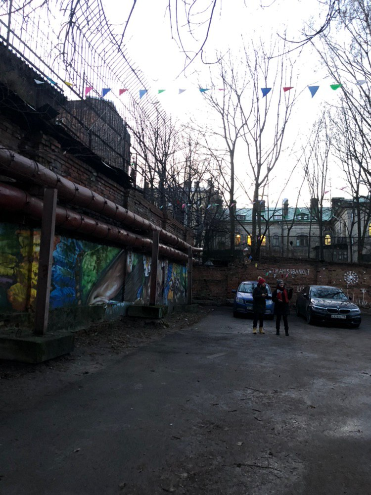

Hands Off
Hands Off is a detective visual story about harrassment in the academy. With a team from DOXA Journal we won the Noesis's pro-social games hackathon. Now I am developing a game engine in js.
Think Like a Forest METARAVE
Queer Hacking Sex Toys with Natasha Tysh
Low-tech Web Layout Workshop with Taste the Waste
In The City Telegram Bots Workshop
Together with Natasha Tysh, we organized and conducted a workshop for teenagers on the development of telegram bots. The idea was to use bots to explore urban space. After a long programming session, we went for a walk around St. Petersburg to test our bots and collect our findings in them.
   Hansel
Hansel is a telegram bot that will help you warn your friends and relatives in case of an emergency. We developed it together with the team from DOXA Journal